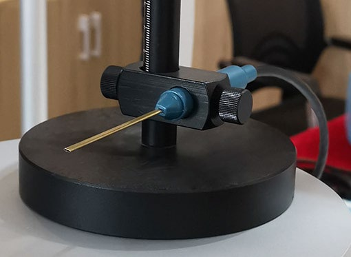
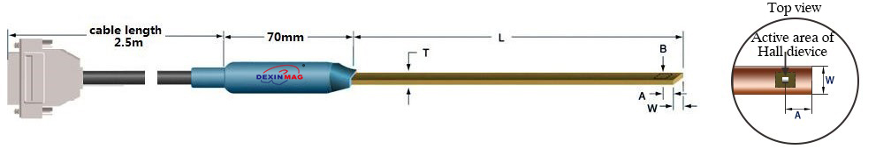
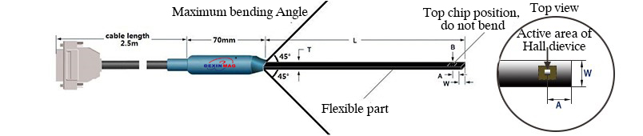
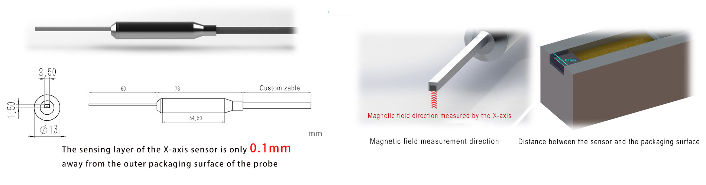

Transverse Probes Catalog
Probe Overview

This document details the various types of transverse Hall probes offered by Xiamen Dexing Magnet Tech. Co., Ltd., suitable for a range of magnetic field measurement applications.
Ordinary Transverse Probe

Probe length can be customized; Array probe can be customized; Can add a temperature sensor inside the probe; Recommend: DX-130 gaussmeter, etc.
| NO. | L(cm) | T(mm) max | W(mm) | A(mm) | Dia. of active area(mm) | Frequency range | Full range | Accuracy (linearity) | Working temp. zone | Zero field temp. coefficient (max) | Temp. coefficient (max) | Packaging materials |
|---|---|---|---|---|---|---|---|---|---|---|---|---|
| CDX800F | 6/8/10 | 1.00 | 2.6 | 1±0.1 | 0.15 | DC-1kHz | 30kGs | ±0.50% ~20kGs | -10°C ~ +75°C | ±0.11 G/°C | ±0.015%/°C | Brass |
| CDX801F | 6/8/10 | 0.80 | 2.2 | 1±0.1 | 0.15 | DC-1kHz | 30kGs | ±0.50% ~20kGs | -10°C ~ +75°C | ±0.11 G/°C | ±0.015%/°C | Brass |
| CDX802F | 6/8/10 | 0.60 | 1.7 | 1±0.1 | 0.15 | DC-1kHz | 30kGs | ±0.50% ~20kGs | -10°C ~ +75°C | ±0.11 G/°C | ±0.015%/°C | Brass |
| MDX801F | 6/8/10 | 0.50 | 1.6 | 1±0.1 | 0.15 | DC-1kHz | 30kGs | ±0.50% ~20kGs | -10°C ~ +75°C | ±0.11 G/°C | ±0.015%/°C | Brass |
| MDX802F | 6/8/10 | 0.50 | 1.2 | 1±0.1 | 0.15 | DC-1kHz | 30kGs | ±0.50% ~20kGs | -10°C ~ +75°C | ±0.11 G/°C | ±0.015%/°C | Brass |
| MDX803F (Flexible) | 6/8/10 | 0.35 | 1.2/0.8 | 0.2±0.05 | 0.15 | DC-50kHz | 30kGs | ±0.20% ~20kGs | -10°C ~ +75°C | ±0.11 G/°C | ±0.015%/°C | Synthetic fat |
| MMDX804F (Flexible) | 6/8/10 | 0.25 | 1.2 | 0.2±0.05 | 0.10 | DC-50kHz | 30kGs | ±0.20% ~20kGs | -10°C ~ +75°C | ±0.11 G/°C | ±0.015%/°C | Synthetic fat |
| MMDX805F (Flexible) | 6/8/10 | 0.25 | 0.8 | 0.2±0.05 | 0.05 | DC-50kHz | 30kGs | ±0.20% ~20kGs | -10°C ~ +75°C | ±0.11 G/°C | ±0.015%/°C | Synthetic fat |
High Precision Transverse Probe
Probe length can be customized; Array probe can be customized; Can add a temperature sensor inside the probe; Recommend: DX-150, DX-160 gaussmeter
| NO. | L(cm) | T(mm) max | W(mm) | A(mm) | Dia. of active area(mm) | Frequency range | Full range | Accuracy (linearity) | Working temp. zone | Zero field temp. coefficient (max) | Temp. coefficient (max) | Packaging materials |
|---|---|---|---|---|---|---|---|---|---|---|---|---|
| MCDX800F | 6/8/10 | 1.00 | 2.6 | 1±0.1 | 0.15 | DC-1kHz | 300kGs | ±0.2% ~ 30kGs | -10°C ~ +75°C | ±0.08 G/°C | ±0.015%/°C | Brass |
| MCDX801F | 6/8/10 | 0.80 | 2.2 | 1±0.1 | 0.15 | DC-1kHz | 300kGs | ±0.2% ~ 30kGs | -10°C ~ +75°C | ±0.08 G/°C | ±0.015%/°C | Brass |
| MCDX802F | 6/8/10 | 0.60 | 1.7 | 1±0.1 | 0.15 | DC-1kHz | 300kGs | ±0.2% ~ 30kGs | -10°C ~ +75°C | ±0.08 G/°C | ±0.015%/°C | Brass |
| MMDX801F | 6/8/10 | 0.50 | 1.6 | 1±0.1 | 0.15 | DC-1kHz | 300kGs | ±0.2% ~ 30kGs | -10°C ~ +75°C | ±0.08 G/°C | ±0.015%/°C | Brass |
| MMDX802F | 6/8/10 | 0.50 | 1.2 | 1±0.1 | 0.15 | DC-1kHz | 300kGs | ±0.2% ~ 30kGs | -10°C ~ +75°C | ±0.08 G/°C | ±0.015%/°C | Brass |
| MMDX803F (Flexible) | 6/8/10 | 0.35 | 1.2/0.8 | 0.2±0.05 | 0.15 | DC-50kHz | 300kGs | ±0.2% ~ 30kGs | -10°C ~ +75°C | ±0.08 G/°C | ±0.015%/°C | Synthetic fat |
| MMDX804F (Flexible) | 6/8/10 | 0.25 | 1.2 | 0.2±0.05 | 0.10 | DC-50kHz | 300kGs | ±0.2% ~ 30kGs | -10°C ~ +75°C | ±0.08 G/°C | ±0.015%/°C | Synthetic fat |
| MMDX805F (Flexible) | 6/8/10 | 0.25 | 0.8 | 0.2±0.05 | 0.05 | DC-50kHz | 300kGs | ±0.2% ~ 20kGs | -10°C ~ +75°C | ±0.11 G/°C | ±0.015%/°C | Synthetic fat |
Ultra High Precision Transverse Probe
Probe length can be customized; Array probe can be customized; Can add a temperature sensor inside the probe; Recommend: DX-180, DX-210, DX-360 gaussmeter
| NO. | L(cm) | T(mm) max | W(mm) | A(mm) | Dia. of active area(mm) | Frequency range | Full range | Accuracy (linearity) | Working temp. zone | Zero field temp. coefficient (max) | Temp. coefficient (max) | Packaging materials |
|---|---|---|---|---|---|---|---|---|---|---|---|---|
| HCDX800F | 6/8/10 | 1.00 | 2.6 | 1±0.1 | 0.15 | DC-1kHz | 300kGs | ±0.05% ~ 30kGs | -10°C ~ +100°C | ±0.06 G/°C | ±0.007%/°C | Brass |
| HCDX801F | 6/8/10 | 0.80 | 2.2 | 1±0.1 | 0.15 | DC-1kHz | 300kGs | ±0.05% ~ 30kGs | -10°C ~ +100°C | ±0.06 G/°C | ±0.007%/°C | Brass |
| HCDX802F | 6/8/10 | 0.60 | 1.7 | 1±0.1 | 0.15 | DC-1kHz | 300kGs | ±0.05% ~ 30kGs | -10°C ~ +100°C | ±0.06 G/°C | ±0.007%/°C | Brass |
| HMDX801F | 6/8/10 | 0.50 | 1.6 | 1±0.1 | 0.15 | DC-1kHz | 300kGs | ±0.05% ~ 30kGs | -10°C ~ +100°C | ±0.06 G/°C | ±0.007%/°C | Brass |
| HMDX802F | 6/8/10 | 0.50 | 1.2 | 1±0.1 | 0.15 | DC-1kHz | 300kGs | ±0.05% ~ 30kGs | -10°C ~ +100°C | ±0.06 G/°C | ±0.007%/°C | Brass |
| HMDX803F (Flexible) | 6/8/10 | 0.35 | 1.2/0.8 | 0.2±0.05 | 0.15 | DC-50kHz | 300kGs | ±0.05% ~ 30kGs | -10°C ~ +100°C | ±0.08 G/°C | ±0.007%/°C | Synthetic fat |
| HMDX804F (Flexible) | 6/8/10 | 0.25 | 1.2 | 0.2±0.05 | 0.10 | DC-50kHz | 300kGs | ±0.05% ~ 30kGs | -10°C ~ +100°C | ±0.08 G/°C | ±0.007%/°C | Synthetic fat |
| HMDX805F (Flexible) | 6/8/10 | 0.25 | 0.8 | 0.2±0.05 | 0.05 | DC-50kHz | 300kGs | ±0.05% ~ 30kGs | -10°C ~ +100°C | ±0.11 G/°C | ±0.007%/°C | Synthetic fat |
Flexible High-Precision Transverse Probe

Suitable for special environment or high frequency.
Probe length can be customized; Array probe can be customized; Can add a temperature sensor inside the probe.
| NO. | L(cm) | T(mm) max | W(mm) | A(mm) | Dia. of active area(mm) | Frequency range | Full range | Accuracy (linearity) | Working temp. zone | Zero field temp. coefficient (max) | Temp. coefficient (max) | Packaging materials |
|---|---|---|---|---|---|---|---|---|---|---|---|---|
| MCDX800F-R | 6/8/10 | 1.50 | 2.4 | 1±0.1 | 0.15 | DC-50kHz | 300kGs | ±0.2% ~ 30kGs | -10°C ~ +60°C | ±0.08 G/°C | ±0.015%/°C | Plastic |
| MCDX801F-R | 6/8/10 | 1.00 | 2.6 | 1±0.1 | 0.15 | DC-50kHz | 300kGs | ±0.2% ~ 30kGs | -10°C ~ +60°C | ±0.08 G/°C | ±0.015%/°C | Plastic |
| MCDX802F-R | 6/8/10 | 0.80 | 2.2 | 1±0.1 | 0.15 | DC-50kHz | 300kGs | ±0.2% ~ 30kGs | -10°C ~ +60°C | ±0.08 G/°C | ±0.015%/°C | Plastic |
| MCDX803F-R | 6/8/10 | 0.50 | 1.6 | 1±0.1 | 0.15 | DC-50kHz | 300kGs | ±0.2% ~ 30kGs | -10°C ~ +60°C | ±0.08 G/°C | ±0.015%/°C | Plastic |
High-Precision Temperature-Compensated Hall Probe (Built-in Temperature Sensor)
Probe length can be customized; Array probe can be customized.
| NO. | L(cm) | T(mm) max | W(mm) | A(mm) | Dia. of active area(mm) | Frequency range | Full range | Accuracy (linearity) | Working temp. zone | Zero field temp. coefficient (max) | Temp. coefficient (max) | Packaging materials |
|---|---|---|---|---|---|---|---|---|---|---|---|---|
| MCDX800F-T | 6/8/10 | 1.00 | 2.6 | 1±0.1 | 0.15 | DC-1kHz | 300kGs | ±0.2% ~ 30kGs | -10°C ~ +100°C | ±0.08G/°C | ±0.01%/°C | Brass |
| MCDX801F-T | 6/8/10 | 0.80 | 2.2 | 1±0.1 | 0.15 | DC-1kHz | 300kGs | ±0.2% ~ 30kGs | -10°C ~ +100°C | ±0.08 G/°C | ±0.01%/°C | Brass |
| HCDX800F-T | 6/8/10 | 1.00 | 2.6 | 1±0.1 | 0.15 | DC-1kHz | 300kGs | ±0.05% ~30kGs | -10°C ~ +100°C | ±0.08G/°C | ±0.01%/°C | Brass |
| HCDX801F-T | 6/8/10 | 0.80 | 2.2 | 1±0.1 | 0.15 | DC-1kHz | 300kGs | ±0.05% ~30kGs | -10°C ~ +100°C | ±0.08 G/°C | ±0.01%/°C | Brass |
High Precision and High Magnetic Field Hall Probe
Probe length can be customized; Array probe can be customized; Can add a temperature sensor inside the probe.
| NO. | L(cm) | T(mm) max | W(mm) | A(mm) | Dia. of active area(mm) | Frequency range | Full range | Accuracy (linearity) | Working temp. zone | Zero field temp. coefficient (max) | Temp. coefficient (max) | Packaging materials |
|---|---|---|---|---|---|---|---|---|---|---|---|---|
| HCDX800F-H | 6/8/10 | 1.00 | 2.6 | 1±0.1 | 0.15 | DC-1kHz | 300kGs | ±0.05% ~ 30kGs ±0.8% ~ 50kGs ±1.5% ~ 100kGs ±5% ~ 300kGs | -10°C ~ +100°C | ±0.08G/°C | ±0.01%/°C | Brass |
| HCDX801F-H | 6/8/10 | 0.80 | 2.2 | 1±0.1 | 0.15 | DC-1kHz | 300kGs | ±0.05% ~ 30kGs ±0.8% ~ 50kGs ±1.5% ~ 100kGs ±5% ~ 300kGs | -10°C ~ +100°C | ±0.08 G/°C | ±0.01%/°C | Brass |
High Precision Low Magnetic Field Probe
Probe length can be customized; Array probe can be customized; Can add a temperature sensor inside the probe.
| NO. | L(cm) | T(mm) max | W(mm) | A(mm) | Resolution | Full range | Accuracy (linearity) | Working temp. zone | Zero field temp. coefficient (max) | Temp. coefficient (max) | Packaging materials |
|---|---|---|---|---|---|---|---|---|---|---|---|
| LDX801F | 7 | 2.8 | 7.2 | 2±0.1 | 0.01uT | 600uT | ±0.2% ~ 100µT ±0.4% ~ 600µT | -10°C ~ +75°C | ±0.0008 G/°C | ±0.05%/°C | Fiber |
High-Precision High-Temperature-Resistant Temperature-Compensated Hall Probe (with Temperature Sensor)
Probe length can be customized; Array probe can be customized.
| NO. | L(cm) | T(mm) max | W(mm) | A(mm) | Dia. of active area(mm) | Frequency range | Full range | Accuracy (linearity) | Working temp. zone | Zero field temp. coefficient (max) | Temp. coefficient (max) | Packaging materials |
|---|---|---|---|---|---|---|---|---|---|---|---|---|
| CDX800F-HT | 6/8/10 | 1.00 | 2.6 | 1±0.1 | 0.15 | DC-1kHz | 300kGs | ±0.1% ~ 30kGs | -10°C ~ +195°C | ±0.08 G/°C | ±0.007%/°C | Brass |
| CDX801F-HT | 6/8/10 | 0.80 | 2.2 | 1±0.1 | 0.15 | DC-1kHz | 300kGs | ±0.1% ~ 30kGs | -10°C ~ +195°C | ±0.08 G/°C | ±0.007%/°C | Brass |
| CDX802F-HT | 6/8/10 | 0.60 | 1.7 | 1±0.1 | 0.15 | DC-1kHz | 300kGs | ±0.1% ~ 30kGs | -10°C ~ +195°C | ±0.08 G/°C | ±0.007%/°C | Brass |
| MDX801F-HT | 6/8/10 | 0.50 | 1.6 | 1±0.1 | 0.15 | DC-1kHz | 300kGs | ±0.1% ~ 30kGs | -10°C ~ +195°C | ±0.08 G/°C | ±0.007%/°C | Brass |
| MDX802F-HT | 6/8/10 | 0.50 | 1.2 | 1±0.1 | 0.15 | DC-1kHz | 300kGs | ±0.1% ~ 30kGs | -10°C ~ +195°C | ±0.08 G/°C | ±0.007%/°C | Brass |
| MDX803F-HT | 6/8/10 | 0.35 | 1.2/0.8 | 0.2±0.05 | 0.15 | DC-50kHz | 300kGs | ±0.1% ~ 30kGs | -10°C ~ +195°C | ±0.08 G/°C | ±0.015%/°C | Synthetic fat |
High-Precision Low-Temperature-Resistant Temperature-Compensated Hall Probe (with Temperature Sensor)
Probe length can be customized; Array probe can be customized.
| NO. | L(cm) | T(mm) max | W(mm) | A(mm) | Dia. of active area(mm) | Frequency range | Full range | Accuracy (linearity) | Working temp. zone | Zero field temp. coefficient (max) | Temp. coefficient (max) | Packaging materials |
|---|---|---|---|---|---|---|---|---|---|---|---|---|
| MCDX800F-LT | 6/8/10 | 1.00 | 2.6 | 1±0.1 | 0.15 | DC-1kHz | 300kGs | ±0.2% ~ 20kGs | -269°C ~ +75°C | ±0.08 G/°C | ±0.007%/°C | Brass |
| MCDX801F-LT | 6/8/10 | 0.80 | 2.2 | 1±0.1 | 0.15 | DC-1kHz | 300kGs | ±0.2% ~ 20kGs | -269°C ~ +75°C | ±0.08 G/°C | ±0.007%/°C | Brass |
| MMDX801F-LT | 6/8/10 | 0.50 | 1.6 | 1±0.1 | 0.15 | DC-1kHz | 300kGs | ±0.2% ~ 20kGs | -269°C ~ +75°C | ±0.08 G/°C | ±0.007%/°C | Brass |
| MMDX802F-LT | 6/8/10 | 0.50 | 1.2 | 1±0.1 | 0.15 | DC-1kHz | 300kGs | ±0.2% ~ 20kGs | -269°C ~ +75°C | ±0.08 G/°C | ±0.007%/°C | Brass |
Ultra-High-Precision Low-Temperature-Resistant Temperature-Compensated Hall Probe (with Temperature Sensor)
Probe length can be customized; Array probe can be customized.
| NO. | L(cm) | T(mm) max | W(mm) | A(mm) | Dia. of active area(mm) | Frequency range | Full range | Accuracy (linearity) | Working temp. zone | Zero field temp. coefficient (max) | Temp. coefficient (max) | Packaging materials |
|---|---|---|---|---|---|---|---|---|---|---|---|---|
| HCDX800F-LT | 6/8/10 | 1.00 | 2.6 | 1±0.1 | 0.15 | DC-1kHz | 300kGs | ±0.05% ~ 20kGs | -269°C ~ +75°C | ±0.08 G/°C | ±0.007%/°C | Brass |
| HCDX801F-LT | 6/8/10 | 0.80 | 2.2 | 1±0.1 | 0.15 | DC-1kHz | 300kGs | ±0.05% ~ 20kGs | -269°C ~ +75°C | ±0.08 G/°C | ±0.007%/°C | Brass |
| HMDX801F-LT | 6/8/10 | 0.50 | 1.6 | 1±0.1 | 0.15 | DC-1kHz | 300kGs | ±0.05% ~ 20kGs | -269°C ~ +75°C | ±0.08 G/°C | ±0.007%/°C | Brass |
| HMDX802F-LT | 6/8/10 | 0.50 | 1.2 | 1±0.1 | 0.15 | DC-1kHz | 300kGs | ±0.05% ~ 20kGs | -269°C ~ +75°C | ±0.08 G/°C | ±0.007%/°C | Brass |
High-Precision High and Low Temperature Resistant Temperature-Compensated Hall Probe (with Temperature Sensor)
Probe length can be customized; Array probe can be customized.
| NO. | L(cm) | T(mm) max | W(mm) | A(mm) | Dia. of active area(mm) | Frequency range | Full range | Accuracy (linearity) | Working temp. zone | Zero field temp. coefficient (max) | Temp. coefficient (max) | Packaging materials |
|---|---|---|---|---|---|---|---|---|---|---|---|---|
| HCDX800F-HL | 6/8/10 | 1.00 | 2.6 | 1±0.1 | 0.15 | DC-1kHz | 300kGs | ±0.1% ~ 20kGs | -269°C ~ +200°C | ±0.08 G/°C | ±0.007%/°C | Brass |
| HCDX801F-HL | 6/8/10 | 0.80 | 2.2 | 1±0.1 | 0.15 | DC-1kHz | 300kGs | ±0.1% ~ 20kGs | -269°C ~ +200°C | ±0.08 G/°C | ±0.007%/°C | Brass |
| HMDX801F-HL | 6/8/10 | 0.50 | 1.6 | 1±0.1 | 0.15 | DC-1kHz | 300kGs | ±0.1% ~ 20kGs | -269°C ~ +200°C | ±0.08 G/°C | ±0.007%/°C | Brass |
| HMDX802F-HL | 6/8/10 | 0.50 | 1.2 | 1±0.1 | 0.15 | DC-1kHz | 300kGs | ±0.1% ~ 20kGs | -269°C ~ +200°C | ±0.08 G/°C | ±0.007%/°C | Brass |
Microspaced Aluminum Transverse Probe

The sensing layer of the X-axis sensor is only 0.1mm away from the outer packaging surface of the probe. Customizable length.
| NO. | L(cm) | T(mm) max | W(mm) | A(mm) | Dia. of active area(mm) | Frequency range | Full range | Accuracy (linearity) | Working temp. zone | Zero field temp. coefficient (max) | Temp. coefficient (max) | Packaging materials |
|---|---|---|---|---|---|---|---|---|---|---|---|---|
| MCDX802FG | 55 | 1.5 | 2.5 | 1±0.1 | 0.15 | DC-1kHz | 300kGs | ±0.2% ~ 30kGs | -10°C ~ +100°C | ±0.08 G/°C | ±0.007%/°C | Aluminum |